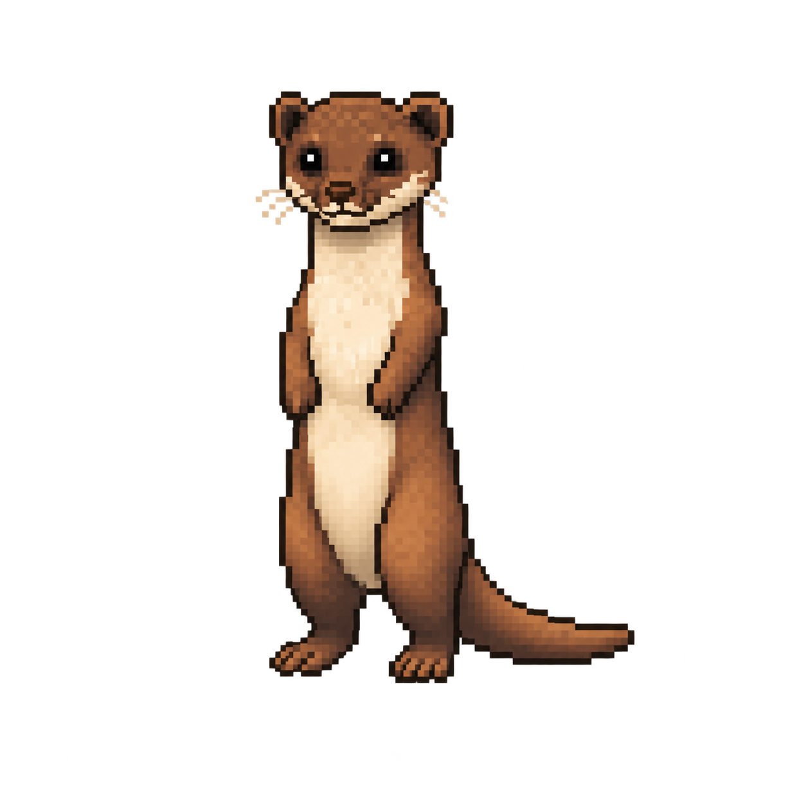
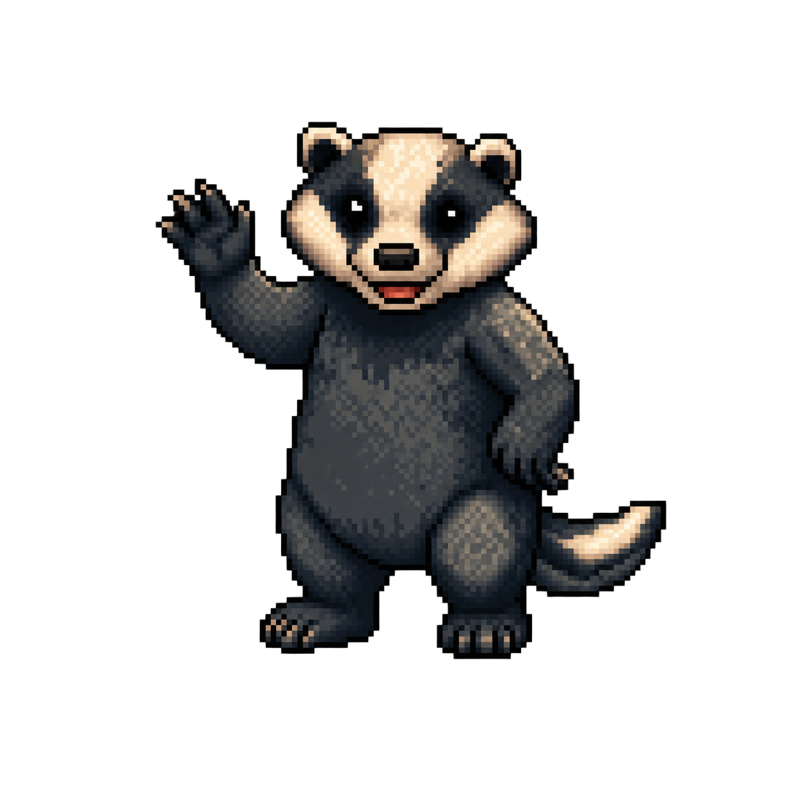

ESCOLHA UM CAMINHO
Qual aventura vamos viver hoje?
Comece por Bento para revisar. Depois, experimente novas missões. Todas estão liberadas.
01
SOMA DE FRAÇÕES
A Barragem das Frações
Junte troncos, complete o inteiro e ajude Bento a conter a correnteza.
02

QUANTIDADES E COMPARAÇÃO
O Enigma da Pirâmide
Resolva placas antigas e conduza Clarice por câmaras cheias de mistérios.
03

DIVISÃO DE FRAÇÕES
A Despensa de Martim
Divida alimentos em porções iguais e organize a despensa.
04
COMPOSIÇÃO DE FRAÇÕES
A Aventura de Silas
Combine peças, complete túneis e desbloqueie novas fases no mapa.
05
REVISÃO E MEMÓRIA
A Trilha de Tadeu
Observe as pistas, enfrente a ventania e encontre o caminho até o oásis.